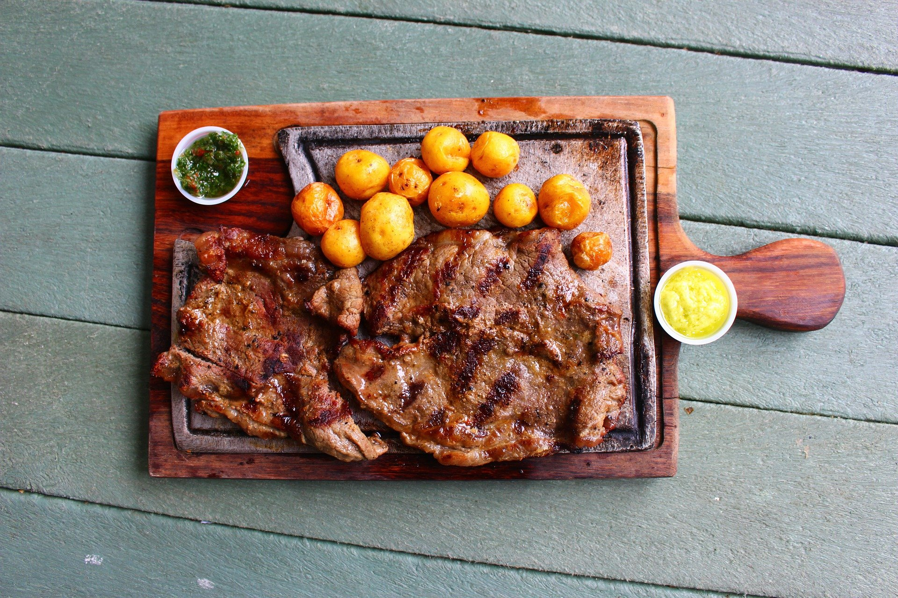
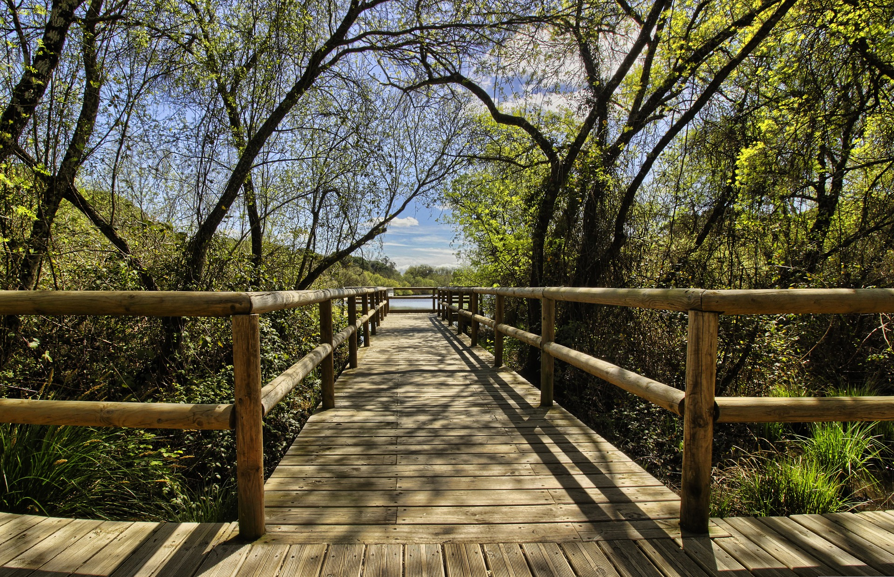

Gastronómico
Para que tengas tema de conversación en esas comidas familiares, de trabajo, entre amigos o donde quieras abrir una conversación interesante, te llevamos de viaje con motivos gastronómicos donde expertos te explicarán el proceso de elaboración o preparación de las bebidas y alimentos típicos que nos ofrecen las diferentes regiones de la República Mexicana, así como a eventos internacionales culinarios.
Relaja tu cuerpo, tu mente y tu alma mientras entras en contacto con la naturaleza y tu yo interno, a través de técnicas milenarias y contemporáneas como temazcales, baños en aguas termales masajes relajantes, meditación y Yoga, entre otras. Asómbrate con la magia de lugares llenos de naturaleza y misticismos, mientras recorres bosques, cascadas, manantiales y mucho más.
Holístico
Aventura y Ecoturismo
Olvídate de la cotidianeidad viviendo un sinfín de aventuras al aire libre. Tírate del paracaídas, baja una montaña a rappel o conquista los rápidos, con todas las medidas de seguridad posibles. Recuerda que la felicidad está detrás de tus miedos. ¡Desafía tu mente y supera todos tus límites!
Aléjate del estrés, mientras te aventuras en un mundo de historias y leyendas, recorriendo diferentes sitios históricos y arqueológicos de México. Revive el pasado y aprende junto a los guías especializados que tenemos para ti.
Cultural